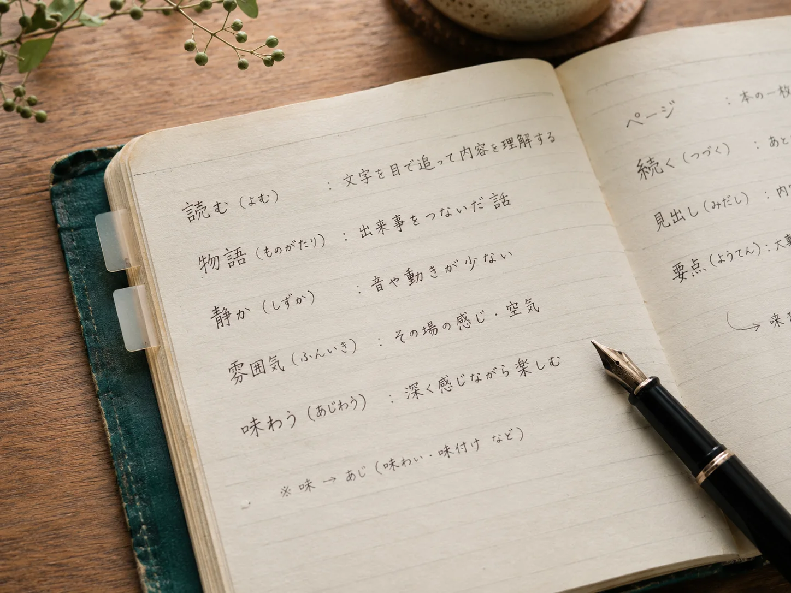

読解
JLPT N2 · Dokkai
語彙 · 文法 · 理解
Đọc – Hiểu –
Ghi nhớ
31 đề đọc hiểu · 641 câu · 2010–2025
HOME
Bí kíp
T7/2025
T12/2025
T7/2024
T12/2024
T7/2023
T12/2023
T7/2022
T12/2022
T7/2021
T12/2021
T12/2020
T7/2019
T12/2019
T7/2018
T12/2018
T7/2017
T12/2017
T7/2016
T12/2016
T7/2015
T12/2015
T7/2014
T12/2014
T7/2013
T12/2013
T7/2012
T12/2012
T7/2011
T12/2011
T7/2010
T12/2010